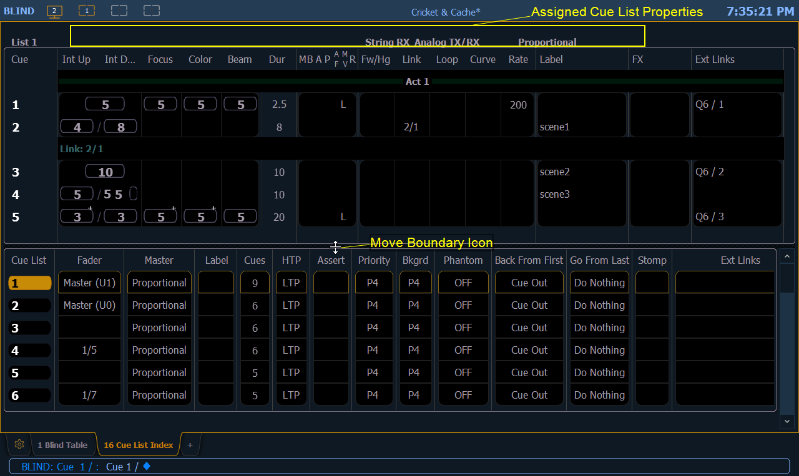

You can access the cue list index by pressing [Cue] [Cue],[Tab] [1][6], or you can navigate within the browser to Record Target Lists > Cue List Index and press [Select].

Cue list properties determine how the cue list will interact. Assigned properties will display at the top of the cue list as well as any currently active show control triggers.
The top half of the cue list index displays all stored cues, including cue list properties, for the selected cue list. The bottom half of the cue list index displays all stored cue lists and their properties. The selected cue list is highlighted.
Using the mouse, you can move the barrier between the stored cue display (top) and the stored list display (bottom). Hover the mouse arrow over the list boundary until it changes to the move boundary icon. Then click and drag the boundary up or down to the desired height.
The command line while in the Cue List Index defaults to cue list selection. The softkeys that display will default to cue list control.
[Next] and [Last] will select the next or last cue list if no cue list or a cue list but no cue is on the command line.
When a specific cue is selected, [Next] and [Last] will move through the cues in that same list, and the softkeys will change to be for a single cue control.